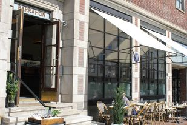
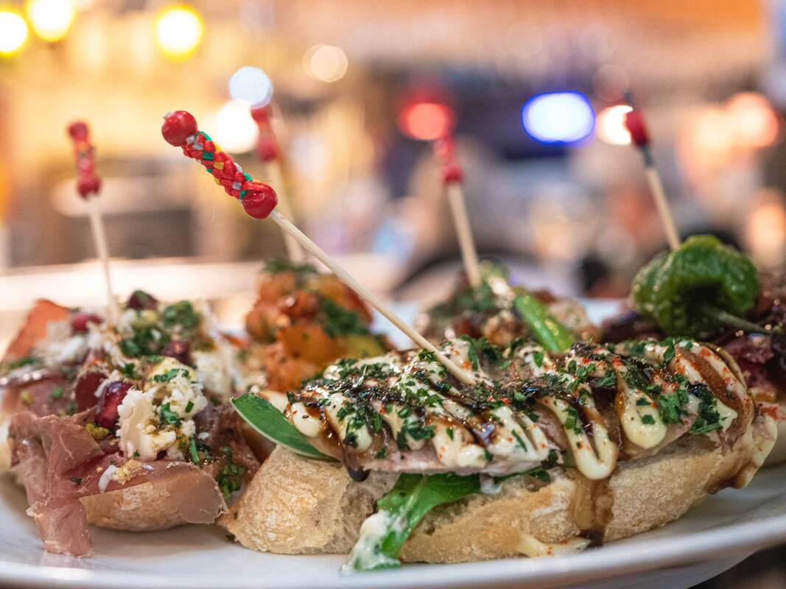
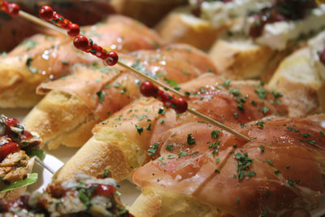
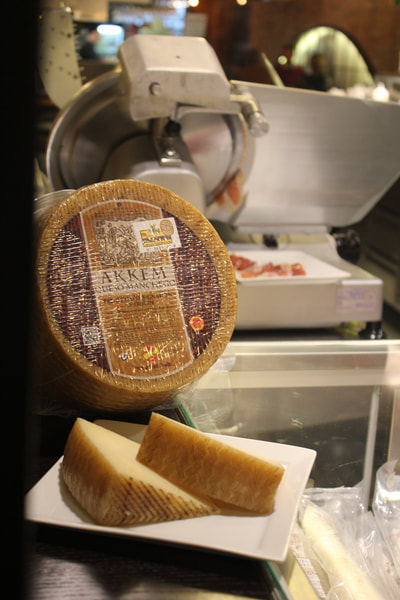

Om stedet
Uformell luksus i hjertet av byen
Barramon Sommerro er en pintxos-bar. Pintxos er baskisk tapas — delikate smaker på ett stykke brød, holdt sammen av den klassiske pintxos-pinnen. Fargen på pinnene bestemmer prisen på de ulike tapasene.
Hos oss finner du både à la carte og et rikholdig utvalg av ulike pintxos, sammen med spanske viner på glass og uteservering. Rammen er lagt for et uformelt og hyggelig kulinarisk møte med baskisk kultur.
Stemningsbilder
Sommerro, sett fra baren






Åpningstider
Tirsdag–torsdag12:00–23:00
Fredag–lørdag12:00–00:00
SøndagStengt
Adresse
Sommerrogata 10255 Oslo